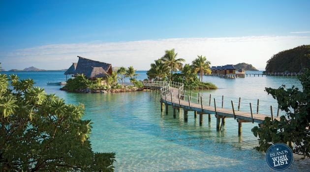
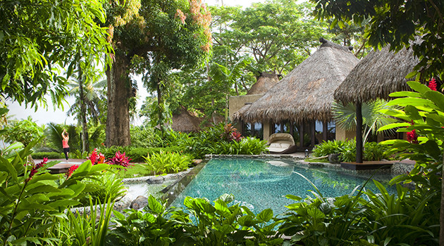
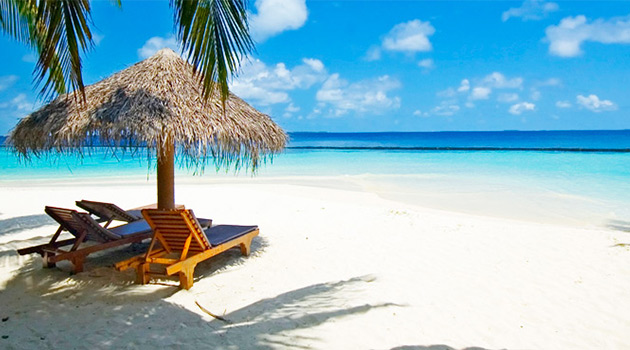
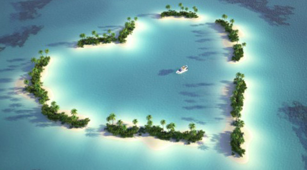

Добро пожаловать на Фиджи
Фиджи - название государства и архипелага из 332 островов, на которых это государство находится: на юго-западе Тихого океана, среди других островов и архипелагов Меланезии - правда, расстояние между этими частицами суши составляет сотни и тысячи километров. Острова архипелага Фиджи коралловые и вулканические; примерно 1/3 их нежилые, однако это и привлекает внимание желающих уединиться по разным причинам - влюбленных пар, молодоженов, романтиков и просто любителей нетронутой природы.
Климат Фиджи: мягкие тропики
Климат влажный тропический, но сильной жары нет ни летом, в сезон дождей - около 26 ° C, ни в сухой сезон - около 23 ° C: здесь комфортно чувствуют себя и взрослые, и дети. Правда, бывают и более высокие температуры - 28-34 ° C, но в ночи всегда становится прохладнее.
Для отдыха обычно рекомендуется выбирать период с мая по декабрь, когда дождей почти нет. Погода отличается в разных частях архипелага: так, на южных берегах основных островов дожди идут чаще и больше высокая влажность воздуха.
Пляжи на Фиджи
Больше всего туристов «привлекается» на остров Вити-Леву, крупнейший в архипелаге Фиджи. Здесь любой может найти себе место по душе и по карману: есть и первоклассные отели и недорогие гостиницы. Пляжи тянутся более чем на 100 км - их называют Коралловым берегом; территория острова - более 10 000 км, и на побережье расположено множество различных курортов, от фешенебельных до тихих и незаметных. Для семейного отдыха хороший пляж Paradise, тихий и спокойный, с мелким белым песком и почти не затронутым «окультуриванием»: пальмы рядом растут прямо у берега и скрыться от жаркого солнца - не проблема, что особенно актуально для семей с детьми. Однако, об удобных головные уборы, солнечные очки и солнцезащитные средства следует позаботиться вовремя: загар на Фиджи очень красивый, но получить солнечные ожоги, в том числе и находясь в воде, можно «в два счета». Взрослые могут найти себе здесь массу развлечений, от дайвинга до рыбалки с арендой катера.
Экскурсии и памятные места на Фиджи
Кажется, что памятников на Фиджи не может быть много, но их, исторических и природных, наберется немало. Сигатока - песчаные дюны, является уникальным местом: на Фиджи везде зелень, а здесь - волнообразные холмы из песка до 60 м высотой - считается, что они формировались миллионы лет. История местности не менее интересна, чем пейзаж: здесь создан археологический парк и открыт музей. Археологи находят вещи, которым около 3000 лет, а здешние захоронения еще старше.
На Фиджи очень много национальных парков и заповедников, за охраной которых постоянно следят местные власти: ведь нетронутая природа - главное богатство этой небольшой и гостеприимной страны с приветливыми и веселыми жителями.